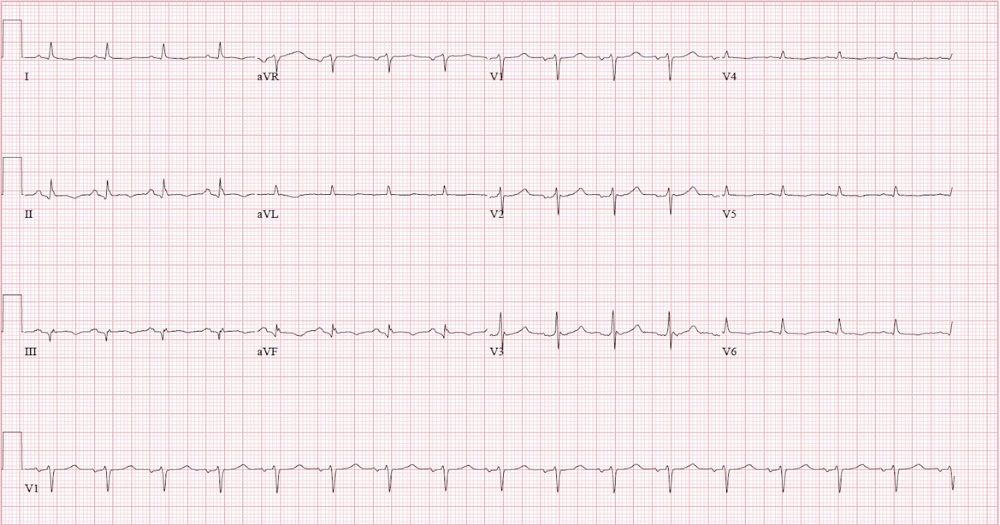
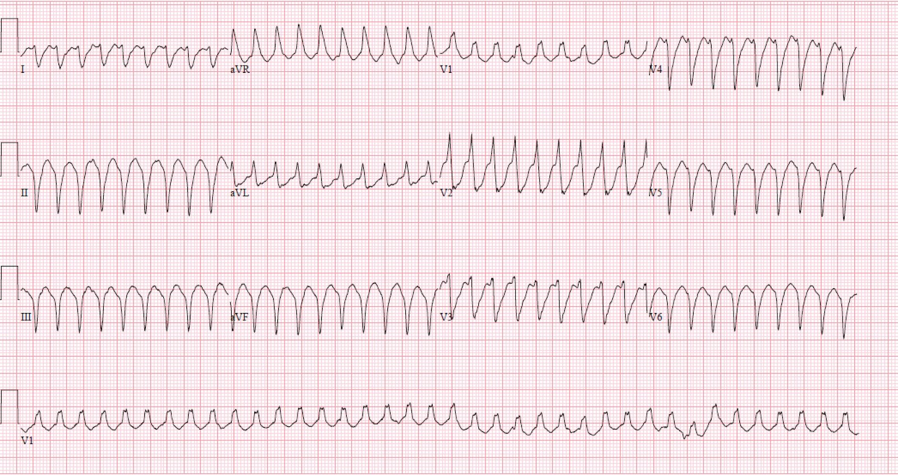
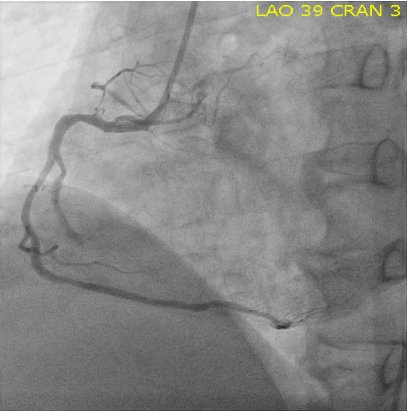
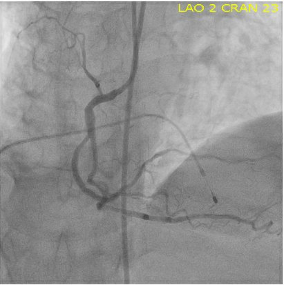
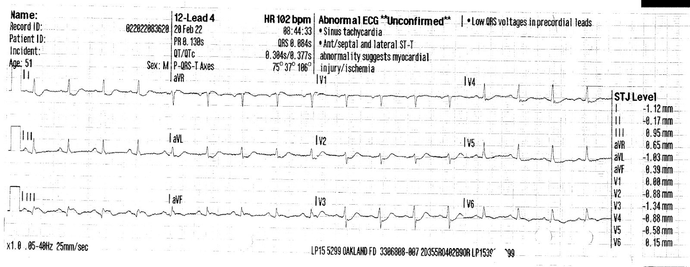
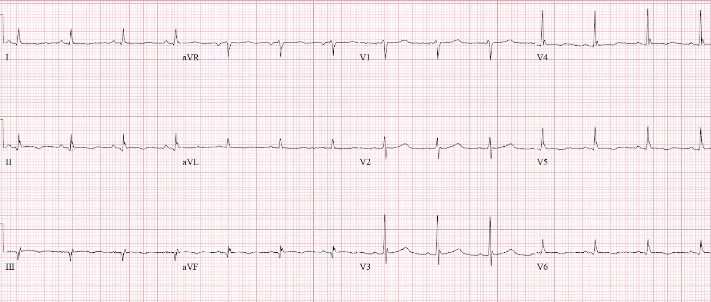
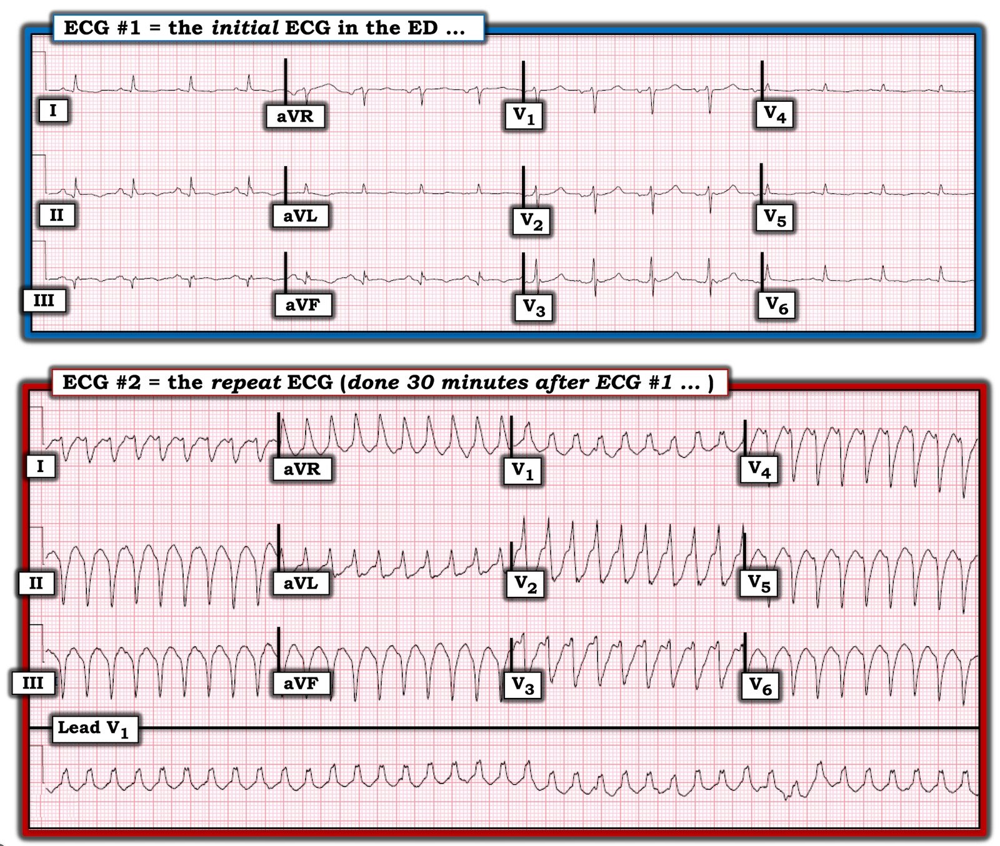
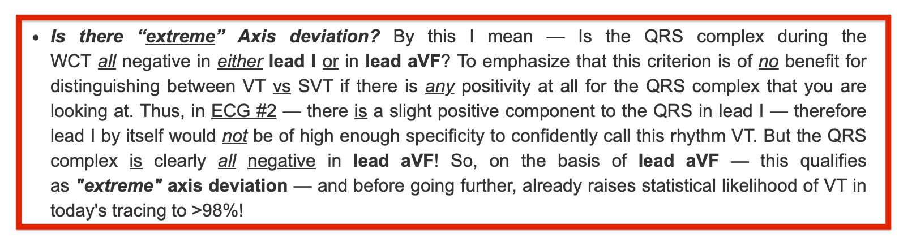

23/03/2022 — Đau ngực từng cơn kèm buồn nôn và nôn, hiện đã hết
Bản dịch tiếng Việt của bài "Intermittent Chest pain with Nausea and Vomiting, resolved at this moment" – Dr. Smith’s ECG Blog. Giữ nguyên toàn bộ 10 hình ảnh của bản gốc.
Ca này do Amandeep (“Deep”) Singh gửi.
Khoa Cấp cứu, Bệnh viện Highland, Oakland.
Ca bệnh
Nam 51 tuổi, tự đi bộ tới một
xe cứu hỏa đang đỗ, than buồn nôn và nôn. Theo lời bệnh nhân, ông bắt đầu
thấy buồn nôn khi thức dậy, và ngay sau đó thì nôn.
Khi tới khoa cấp cứu, ông kể rằng
mình đã có những cơn đau ngực từng lúc, kèm buồn nôn và
khó thở, trong 3 ngày qua.
Các cơn này kéo dài khoảng 20 phút rồi tự hết.
Ông nói rằng hiện tại ông không còn
đau ngực, khó thở hay buồn nôn nữa.
Đây là điện tâm đồ đầu tiên của ông, ghi tại khoa cấp cứu (ED).


Các bác sĩ
khám đầu tiên đọc điện tâm đồ là “không có ST chênh lên” và cho làm các xét nghiệm đánh giá tim cho bệnh nhân.
Bạn nghĩ sao?
Có vài bất thường tinh tế trên điện tâm đồ này. Các chuyển đạo thành dưới có sóng Q,
QRS phân mảnh, ST chênh lên nằm ngang tinh tế (so với đường PQ),
và sóng T đảo ngược. Chuyển đạo I và aVL có
ST chênh xuống rất nhẹ và sóng T hơi dương. Chuyển đạo V2 có ST chênh xuống rất nhẹ
và gợi ý một sóng T nổi bật. Có sóng T đảo ngược ở V6. Các dấu hiệu này gợi ý nhồi máu cơ tim
dưới-sau đã tái tưới máu một phần và tương hợp với việc các triệu chứng của ông đã hết.
_________
Bình luận của Smith: ca này được gửi cho tôi mà không kèm thông tin gì, và tôi trả lời: “Tái tưới máu của nhồi máu cơ tim thành dưới và thành bên, có thể cả thành sau.” Đây là cái mà tôi gọi là “hội chứng Wellens thành dưới”. Wellens là một hội chứng sau thiếu máu cục bộ, trong đó cơn đau ngực đã hết và trên điện tâm đồ có sóng T đảo ngược (sóng T tái tưới máu); ý nghĩa của nó là trong lúc bệnh nhân đau ngực, động mạch đã bị tắc, nhưng sau đó đã tự tái tưới máu.
Điểm nổi bật là ST chênh lên nhẹ ở II và aVF, với đoạn ST lồi lên (gọi là “dạng vòm” – coving). Sóng T đảo ngược gợi ý tái tưới máu. Bất kỳ điện tâm đồ nào cho thấy tái tưới máu đều có nguy cơ RẤT cao, vì huyết khối đó có thể lan rộng bất cứ lúc nào và gây tắc lại.
___________
Khoảng 30 phút sau khi đến viện, bệnh nhân kêu đau ngực,
nôn, và trông có vẻ nặng. Màn hình
theo dõi tim gợi ý nhịp nhanh QRS rộng (wide-complex tachycardia), và một điện tâm đồ đã được ghi.


Nhịp nhanh thất
Nhịp này đã được sốc điện chuyển nhịp thành công tại khoa cấp cứu. Troponin ban đầu của ông là 2,46 ng/mL. Ông được đưa vào phòng thông tim (cath lab), tại đó phát hiện tắc 100%
nhánh nhĩ thất sau của RCA (dòng chảy TIMI 0) và đã đặt stent
tái thông. Trong thủ thuật, ông
bị blốc tim hoàn toàn và một cơn vô tâm thu ngắn kéo dài dưới
1 phút.
Đã đặt máy tạo nhịp tạm thời
qua tĩnh mạch.




Sau khi đặt stent
Khi xem lại hồ sơ, phát hiện điện tâm đồ trước viện này, vốn
ban đầu không được nhân viên khoa cấp cứu nhìn thấy, mà do đội cứu hỏa
— đơn vị đánh giá bệnh nhân đầu tiên — ghi lại.
điện tâm đồ trước viện được tìm thấy sau đó:


OMI dưới-sau rõ ràng
Ở đây ST chênh lên rõ hơn ở chuyển đạo III và
ST chênh lên rất nhẹ ở aVF, kèm ST chênh xuống soi gương ở chuyển đạo I
và aVL. Cũng
có bằng chứng
nhồi máu lan ra thành sau với ST chênh xuống ở V2-V4. Ngoài ra dường như
có ST chênh lên rất nhẹ kèm sóng T đảo ngược ở V6.
Đây là điện tâm đồ cuối cùng, sau PCI vào ngày hôm sau:


Rất giống với điện tâm đồ đầu tiên (sau tái tưới máu tự phát)
Những điểm cần học:
1) chúng ta nên học cách nhận ra các dấu hiệu
điện tâm đồ có thể chỉ ra tái tưới máu một phần (ví dụ các dấu hiệu trong
ca này, sóng T Wellens, nhịp tự thất gia tốc – AIVR)
2) Tái tưới máu là khúc dạo đầu của tắc lại
3) Nhân viên khoa cấp cứu nên cố gắng tìm
điện tâm đồ trước viện của bệnh nhân – trong một số trường hợp, chúng có thể giúp đẩy nhanh
việc chăm sóc thích hợp.
4) Hãy học cách nhận ra OMI tinh tế
5) OMI rất tinh tế này hoàn toàn có thể đã dẫn đến tử vong (blốc tim độ 3 kèm vô tâm thu)

===================================
BÌNH LUẬN CỦA TÔI, bởi KEN GRAUER, MD (20/3/2022):
===================================
Một ca xuất sắc do Amandeep Singh trình bày! Tôi giới hạn bình luận của mình ở 3 vấn đề — mà tôi sẽ minh họa trên 2 điện tâm đồ đầu tiên của ca này (được tôi in lại trong Hình 1):
- Số lượng chuyển đạo bất thường trên điện tâm đồ ban đầu.
- Điện thế thấp trên bản ghi này.
- Những điểm chẩn đoán về nhịp VT xảy ra sau đó.


Số lượng chuyển đạo bất thường ở điện tâm đồ #1: Các Dr. Singh và Smith đã trình bày chi tiết ở trên vì sao, với bệnh sử đau ngực mới xuất hiện gần đây — điện tâm đồ #1 lẽ ra phải được nhận ra là có giá trị chẩn đoán OMI dưới-sau gần đây, hiện đang cho thấy các thay đổi ST-T của tái tưới máu.
- Tôi chỉ xin bổ sung điểm mà chúng tôi đã nêu nhiều lần trên Dr. Smith’s ECG Blog — đó là ở một bệnh nhân có triệu chứng mới, càng nhiều chuyển đạo có thay đổi ST-T bất thường — thì càng phải lo ngại hơn về một OMI gần đây hoặc cấp (Xem Bình luận và Bảng của tôi ở cuối trang của bài ngày 13 tháng Chín năm 2020, cùng nhiều bài khác).
- Không dưới 11/12 chuyển đạo ở điện tâm đồ #1 là bất thường. Bao gồm các chuyển đạo thành dưới (có sóng Q, ST dạng vòm kèm chênh lên tinh tế và sóng T đang dần đảo ngược) — chuyển đạo aVL (cho thấy hình ảnh ST-T soi gương tinh tế, ngược với hình ảnh thấy ở chuyển đạo III) — chuyển đạo V1 (có ST dẹt tinh tế và sóng T cao hơn sóng T ở chuyển đạo V6!) — các chuyển đạo thành trước V2,V3 (có ST lõm (scooping) tinh tế, gợi ý tổn thương thành sau) — và các chuyển đạo thành bên I, V4,V5,V6 (tất cả đều có ST dẹt không đặc hiệu, kèm gợi ý sóng T đảo ngược do tái tưới máu).
Điện thế thấp ở điện tâm đồ #1: Như tôi đã nhấn mạnh trong Bình luận của tôi ở cuối trang của bài ngày 12 tháng Mười Một năm 2020 trên Dr. Smith’s ECG Blog — điện thế thấp thực sự là không phổ biến. Nhưng nó có hiện diện ở cả chuyển đạo chi lẫn chuyển đạo ngực ở điện tâm đồ #1.
- Trong số các nguyên nhân có thể gây điện thế thấp mà tôi liệt kê trong Bảng của bài ngày 12 tháng Mười Một năm 2020 — có choáng cơ tim (myocardial stunning). Với việc VT xuất hiện đột ngột trong vòng 30 phút sau khi ghi điện tâm đồ #1 — tôi nghi rằng “choáng” cơ tim do OMI cấp diện rộng là nguyên nhân gây ra điện thế thấp rõ rệt này. Ủng hộ cho giả thuyết này — là việc biên độ QRS vẫn giảm nhưng đã lớn hơn trên điện tâm đồ ghi ở bệnh nhân hôm nay vào ngày hôm sau, sau PCI (thấy rõ nhất ở các chuyển đạo V3,V4 của bản ghi theo dõi đó).
Vì sao điện tâm đồ #2 chắc chắn 100% là VT: Như Dr. Singh đã nhấn mạnh — WCT ( = nhịp nhanh QRS rộng – Wide-Complex Tachycardia) đều với tần số ~230/phút thấy ở điện tâm đồ #2 là chỉ định rõ ràng để sốc điện chuyển nhịp đồng bộ ngay lập tức (đã nhanh chóng khôi phục nhịp xoang). Vì các nhịp WCT đều thường là một thách thức chẩn đoán — tôi nghĩ đáng để bình luận vì sao bản ghi này gần như chẩn đoán chắc chắn 100% là VT.
- Như chúng tôi vẫn thường nhấn mạnh — Hãy giả định rằng mọi nhịp WCT đều mà không có dấu hiệu rõ ràng của sóng P xoang là VT cho đến khi bạn chứng minh được điều ngược lại. NẾU làm như vậy — bạn sẽ đúng ít nhất 80% số lần, thậm chí trước khi bạn xem xét các dấu hiệu trên bản ghi. Và nếu có một bối cảnh lâm sàng dễ dẫn tới VT (như OMI cấp ở bệnh nhân hôm nay) — thì xác suất thống kê của VT là >90% ngay cả trước khi bạn nhìn vào bản ghi!
- Thêm vào đó — nhịp WCT ở điện tâm đồ #2 của ca hôm nay thỏa gần như tất cả các tiêu chuẩn “nhận diện nhanh” VT của tôi (Xem Bình luận của tôi trong bài ngày 5 tháng Năm năm 2020 trên Dr. Smith’s ECG Blog).
Trong số các đặc điểm điện tâm đồ tôi dựa vào để phân biệt nhanh giữa nhịp SVT (có QRS giãn rộng do BBB có từ trước hoặc do dẫn truyền lệch hướng) với nhịp nhanh thất là: i) Trục mặt phẳng trán trong khi có nhịp WCT; ii) Có giống bất kỳ dạng BBB hay blốc phân nhánh nào đã biết không (tức là, QRS “xấu xí” đến mức nào); iii) QRS có âm hoàn toàn (hoặc gần như âm hoàn toàn) ở chuyển đạo V6 không?; iv) QRS có dương hoàn toàn ở chuyển đạo aVR không?; và, v) Có “chậm trễ” tương đối ở sóng lệch ban đầu của QRS không? Áp dụng các đặc điểm này cho điện tâm đồ #2:
- Có trục lệch “cực độ” không? Ý tôi là — Phức bộ QRS trong lúc WCT có âm hoàn toàn ở hoặc chuyển đạo I hoặc chuyển đạo aVF không? Xin nhấn mạnh rằng tiêu chuẩn này không giúp ích gì cho việc phân biệt VT với SVT nếu phức bộ QRS bạn đang xem có bất kỳ phần dương nào. Do đó, ở điện tâm đồ #2 — có một thành phần dương nhỏ của QRS ở chuyển đạo I — vì vậy riêng chuyển đạo I sẽ không đủ đặc hiệu để tự tin gọi nhịp này là VT. Nhưng phức bộ QRS rõ ràng là âm hoàn toàn ở chuyển đạo aVF! Vậy, dựa trên chuyển đạo aVF — trường hợp này đủ tiêu chuẩn trục lệch “cực độ” — và trước khi xét tiếp, đã nâng xác suất thống kê của VT trên bản ghi hôm nay lên >98%!
- Có giống bất kỳ dạng blốc dẫn truyền nào đã biết không? Ở điện tâm đồ #2 — phức bộ QRS ở chuyển đạo V1 hơi giống hình thái RBBB, ở chỗ QRS rộng và dương — nhưng việc thiếu mọi đường nét rõ ràng (tức là, chúng ta thấy một sóng R một pha không có hình dạng rõ ở chuyển đạo V1), nếu có gợi ý gì, thì gợi ý VT nhiều hơn là nhịp SVT. Nhìn chung, hình thái QRS là “xấu xí“ — ý tôi là hình thái QRS ở điện tâm đồ #2 không giống bất kỳ dạng rối loạn dẫn truyền nào đã biết!
- Chuyển đạo V6 âm hoàn toàn. Điều này gần như không bao giờ gặp ở nhịp trên thất (tức là, nó gợi ý xung động điện bắt đầu từ mỏm tim).
- Chuyển đạo aVR dương hoàn toàn. Điều này cũng gần như không bao giờ gặp ở nhịp trên thất (tức là, nó gợi ý xung động điện bắt đầu từ mỏm tim).
- Có “chậm trễ” tương đối ở sóng lệch ban đầu của QRS không? Các nhịp SVT có xu hướng biểu hiện vectơ khử cực ban đầu nhanh hơn — vì khử cực trên thất nhìn chung bắt đầu hành trình xuống thất bằng cách đi qua các đường dẫn truyền sẵn có. Một ngoại lệ đáng chú ý của quy luật chung này là khi có AP (đường phụ) đi tắt qua nút AV (tức là, ở bệnh nhân WPW). Dù vậy — dấu hiệu “chậm trễ tương đối” ở phần ban đầu của phức bộ QRS ở nhiều chuyển đạo nghiêng về VT. Mặc dù các nghiên cứu phức tạp có nêu một số chỉ số với giới hạn thời gian sóng lệch ban đầu chính xác như là các tiêu chuẩn “chính xác” cho VT — trên thực tế, việc đo chính xác từng milimét các sóng lệch QRS ban đầu tại giường của một bệnh nhân đang diễn biến xấu nhanh vừa tốn thời gian, vừa cực kỳ khó thực hiện chính xác. Theo kinh nghiệm của tôi — các phép đo chủ quan thường là đủ! Dù vậy, ở điện tâm đồ #2 — tôi thấy thách thức lớn nhất là cố xác định chính xác chỗ phức bộ QRS bắt đầu. Tôi tin rằng có lẽ có ít nhất một mức chậm trễ tương đối nào đó ở phần ban đầu của đa số các phức bộ QRS chủ yếu âm ở điện tâm đồ #2 — nhưng điều này rõ ràng khó đánh giá. (LƯU Ý: Trong các tiêu chuẩn tôi đề xuất ở các gạch đầu dòng trên — gạch đầu dòng cuối cùng này về “chậm trễ tương đối” của sóng lệch ban đầu là khó đánh giá nhất và theo kinh nghiệm của tôi, là ít hữu ích nhất).
- ĐIỀU CỐT LÕI: Ngoại trừ tiêu chuẩn cuối cùng của tôi (về chậm trễ ban đầu của các phức bộ QRS giãn rộng) — mỗi tiêu chuẩn còn lại tôi nêu đều dương tính cho VT. Vì vậy, tôi tuyên bố với độ tin cậy 100% rằng nhịp ở điện tâm đồ #2 chắc chắn là VT.
PHẦN BỔ SUNG (25/3/2022):
Tôi nhận được bình luận sau đây của Dr. Jerry Jones về ca này. Tôi chắc rằng nhiều độc giả biết đến Dr. Jones qua sự sâu sắc và chuyên môn của ông trong nhiều năm về đọc điện tâm đồ.
Dr. Jones viết như sau:
Đây là một điện tâm đồ rất khó đọc, trừ khi người ta có cơ hội xem điện tâm đồ trước viện do nhân viên cấp cứu ngoài viện ghi.
- Tôi chú ý tới các chuyển đạo thành dưới chỉ vì hình thái của các thay đổi tái cực chứ KHÔNG phải vì ST chênh lên. Tôi sẽ không đặt nhiều niềm tin vào độ lệch ST ở mức đó ( = dưới 0,5 mm) — mà ngay cả khi phóng to đáng kể trên máy tính của tôi — vẫn rất thiếu thuyết phục.
- Dù vậy, hình dạng của đoạn ST rất gợi ý một tình trạng tắc gần đây — và sóng T đảo ngược (dưới 0,3 mV) gợi ý tái tưới máu một phần.
- Tôi biết Dr. Smith đã từng nhắc tới “Wellens thành dưới” — nhưng tôi đã cho rằng sóng T đảo ngược sẽ có cùng biên độ với sóng T mà chúng ta thấy trong tắc LAD ở hội chứng Wellens nguyên bản.
- Gợi ý ST chênh xuống ở các chuyển đạo trước tim phía trước bên phải — dù rất, rất tinh tế — vẫn nhận thấy được. Tôi sẽ không trách bất kỳ ai, trừ một người đọc điện tâm đồ rất giàu kinh nghiệm, vì đã bỏ sót ca này (dựa trên những thay đổi điện tâm đồ này). Tuy nhiên, bệnh sử đã cung cấp thêm định hướng.
Dr. Jones cũng nêu thêm một câu hỏi về cách diễn đạt của tôi liên quan đến việc dùng trục mặt phẳng trán để phân biệt VT với nhịp trên thất. Khi đọc lại bình luận của mình — tôi đồng ý rằng cách diễn đạt ban đầu của tôi có thể đã gây khó hiểu — vì vậy, với lòng cảm kích dành cho “con mắt đại bàng” xưa nay của Dr. Jones — tôi đã sửa cách diễn đạt trong phần bài viết ở trên thành nội dung xuất hiện trong khung chữ nhật MÀU ĐỎ dưới đây. Cảm ơn Dr. Jones vì những bình luận của ông! — Ken Grauer, MD

